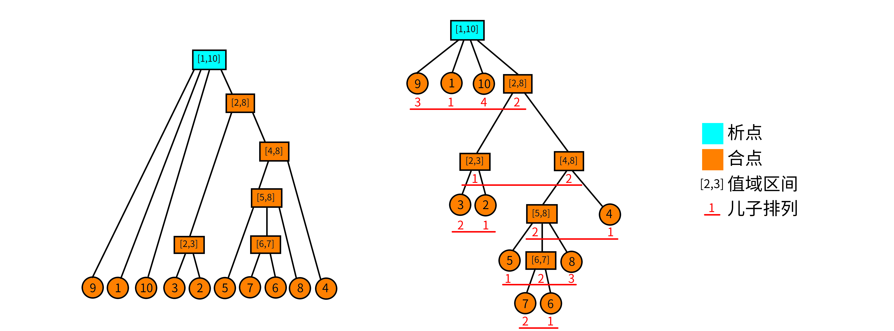

Divide combine
关于段的问题
我们由一个小清新的问题引入：
对于一个 $1-n$ 的排列，我们称一个值域连续的区间为段．问一个排列的段的个数．比如，${5 ,3 ,4, 1 ,2}$ 的段有：$[1,1],[2,2],[3,3],[4,4],[5,5],[2,3],[4,5],[1,3],[2,5],[1,5]$．
看到这个东西，感觉要维护区间的值域集合，复杂度好像挺不友好的．线段树可以查询某个区间是否为段，但不太能统计段的个数．
这里我们引入这个神奇的数据结构——析合树！
连续段
在介绍析合树之前，我们先做一些前提条件的限定．鉴于 LCA 的课件中给出的定义不易理解，为方便读者理解，这里给出一些不太严谨（但更容易理解）的定义．
排列与连续段
排列：定义一个 $n$ 阶排列 $P$ 是一个大小为 $n$ 的序列，使得 $P_i$ 取遍 $1,2,\cdots,n$．说得形式化一点，$n$ 阶排列 $P$ 是一个有序集合满足：
- $|P|=n$.
- $\forall i,P_i\in[1,n]$.
-
$\nexists i,j\in[1,n],P_i=P_j$.
连续段：对于排列 $P$，定义连续段 $(P,[l,r])$ 表示一个区间 $[l,r]$，要求 $P_{l\sim r}$ 值域是连续的．说得更形式化一点，对于排列 $P$，连续段表示一个区间 $[l,r]$ 满足：
$$ (\nexists\ x,z\in[l,r],y\notin[l,r],\ P_x<P_y<P_z) $$
特别地，当 $l>r$ 时，我们认为这是一个空的连续段，记作 $(P,\varnothing)$．
我们称排列 $P$ 的所有连续段的集合为 $I_P$，并且我们认为 $(P,\varnothing)\in I_P$．
连续段的运算
连续段是依赖区间和值域定义的，于是我们可以定义连续段的交并差的运算．
定义 $A=(P,[a,b]),B=(P,[x,y])$，且 $A,B\in I_P$．于是连续段的关系和运算可以表示为：
- $A\subseteq B\iff x\le a\wedge b\le y$.
- $A=B\iff a=x\wedge b=y$.
- $A\cap B=(P,[\max(a,x),\min(b,y)])$.
- $A\cup B=(P,[\min(a,x),\max(b,y)])$.
- $A\setminus B=(P,{i|i\in[a,b]\wedge i\notin[x,y]})$.
其实这些运算就是普通的集合交并差放在区间上而已．
连续段的性质
连续段的一些显而易见的性质．我们定义 $A,B\in I_P,A \cap B \neq \varnothing,A \notin B,B \notin A$，那么有 $A\cup B,A\cap B,A\setminus B,B\setminus A\in I_P$．
证明？证明的本质就是集合的交并差的运算．
析合树
好的，现在讲到重点了．你可能已经猜到了，析合树正是由连续段组成的一棵树．但是要知道一个排列可能有多达 $O(n^2)$ 个连续段，因此我们就要抽出其中更基本的连续段组成析合树．
本原段
其实这个定义全称叫作 本原连续段．但笔者认为本原段更为简洁．
对于排列 $P$，我们认为一个本原段 $M$ 表示在集合 $I_P$ 中，不存在与之相交且不包含的连续段．形式化地定义，我们认为 $X\in I_P$ 且满足 $\forall A\in I_P,\ X\cap A= (P,\varnothing)\vee X\subseteq A\vee A\subseteq X$．
所有本原段的集合为 $M_P$. 显而易见，$(P,\varnothing)\in M_P$．
显然，本原段之间只有相离或者包含关系．并且你发现 一个连续段可以由几个互不相交的本原段构成．最大的本原段就是整个排列本身，它包含了其他所有本原段，因此我们认为本原段可以构成一个树形结构，我们称这个结构为 析合树．更严格地说，排列 $P$ 的析合树由排列 $P$ 的 所有本原段 组成．
前面干讲这么多的定义，不来点图怎么行．考虑排列 $P={9,1,10,3,2,5,7,6,8,4}$. 它的本原段构成的析合树如下：

在图中我们没有标明本原段．而图中 每个结点都代表一个本原段．我们只标明了每个本原段的值域．举个例子，结点 $[5,8]$ 代表的本原段就是 $(P,[6,9])={5,7,6,8}$．于是这里就有一个问题：什么是析点合点？
析点与合点
这里我们直接给出定义，稍候再来讨论它的正确性．
- 值域区间：对于一个结点 $u$，用 $[u_l,u_r]$ 表示该结点的值域区间．
- 儿子序列：对于析合树上的一个结点 $u$，假设它的儿子结点是一个 有序 序列，该序列是以值域区间为元素的（单个的数 $x$ 可以理解为 $[x,x]$ 的区间）．我们把这个序列称为儿子序列．记作 $S_u$．
- 儿子排列：对于一个儿子序列 $S_u$，把它的元素离散化成正整数后形成的排列称为儿子排列．举个例子，对于结点 $[5,8]$，它的儿子序列为 ${[5,5],[6,7],[8,8]}$，那么把区间排序标个号，则它的儿子排列就为 ${1,2,3}$；类似的，结点 $[4,8]$ 的儿子排列为 ${2,1}$．结点 $u$ 的儿子排列记为 $P_u$．
- 合点：我们认为，儿子排列为顺序或者逆序的点为合点．形式化地说，满足 $P_u={1,2,\cdots,|S_u|}$ 或者 $P_u={|S_u|,|S_u-1|,\cdots,1}$ 的点称为合点．叶子结点没有儿子排列，我们也认为它是合点．
- 析点：不是合点的就是析点．
从图中可以看到，只有 $[1,10]$ 不是合点．因为 $[1,10]$ 的儿子排列是 ${3,1,4,2}$．
析点与合点的性质
析点与合点的命名来源于他们的性质．首先我们有一个非常显然的性质：对于析合树中任何的结点 $u$，其儿子序列区间的并集就是结点 $u$ 的值域区间．即 $\bigcup_{i=1}^{|S_u|}S_u[i]=[u_l,u_r]$．
对于一个合点 $u$：其儿子序列的任意 子区间 都构成一个 连续段．形式化地说，$\forall S_u[l\sim r]$，有 $\bigcup_{i=l}^rS_u[i]\in I_P$．
对于一个析点 $u$：其儿子序列的任意 长度大于 1（这里的长度是指儿子序列中的元素数，不是下标区间的长度） 的子区间都 不 构成一个 连续段．形式化地说，$\forall S_u[l\sim r],l<r$，有 $\bigcup_{i=l}^rS_u[i]\notin I_P$．
合点的性质不难证明．因为合点的儿子排列要么是顺序，要么是倒序，而值域区间也是首位相接，因此只要是连续的一段子序列（区间）都是一个连续段．
对于析点的性质可能很多读者就不太能理解了：为什么 任意 长度大于 $1$ 的子区间都不构成连续段？
使用反证法．假设对于一个点 $u$，它的儿子序列中有一个 最长的 区间 $S_u[l\sim r]$ 构成了连续段．那么这个 $A=\bigcup_{i=l}^rS_u[i]\in I_P$，也就意味着 $A$ 是一个本原段！（因为 $A$ 是儿子序列中最长的，因此找不到一个与它相交又不包含的连续段）于是你就没有使用所有的本原段构成这个析合树．矛盾．
析合树的构造
对于具体构造析合树，LCA 提供了一种线性构造算法[^ref1]，下面给出一种比较好懂的 $O(n\log n)$ 算法．
增量法
我们考虑增量法．用一个栈维护前 $i-1$ 个元素构成的析合森林．在这里需要 着重强调，析合森林的意思是，在任何时侯，栈中结点要么是析点要么是合点．现在考虑当前结点 $P_i$．
- 我们先判断它能否成为栈顶结点的儿子，如果能就变成栈顶的儿子，然后把栈顶取出，作为当前结点．重复上述过程直到栈空或者不能成为栈顶结点的儿子．
- 如果不能成为栈顶的儿子，就看能不能把栈顶的若干个连续的结点都合并成一个结点（判断能否合并的方法在后面），把合并后的点，作为当前结点．
- 重复上述过程直到不能进行为止．然后结束此次增量，直接把当前结点压栈．
接下来我们仔细解释一下．
具体的策略
我们认为，如果当前点能够成为栈顶结点的儿子，那么栈顶结点是一个合点．如果是析点，那么你合并后这个析点就存在一个子连续段，不满足析点的性质．因此一定是合点．
如果无法成为栈顶结点的儿子，那么我们就看栈顶连续的若干个点能否与当前点一起合并．设 $l$ 为当前点所在区间的左端点．我们计算 $L_i$ 表示右端点下标为 $i$ 的连续段中，左端点 $< l$ 的最大值．当前结点为 $P_i$，栈顶结点记为 $t$．
- 如果 $L_i$ 不存在，那么显然当前结点无法合并；
- 如果 $t_l=L_i$，那么这就是两个结点合并，合并后就是一个 合点；
- 否则在栈中一定存在一个点 $t'$ 的左端点 ${t'}_l=L_i$，那么一定可以从当前结点合并到 $t'$ 形成一个 析点；
判断能否合并
最后，我们考虑如何处理 $L_i$．事实上，一个连续段 $(P,[l,r])$ 等价于区间极差与区间长度 -1 相等．即
$$ \max_{l\le i\le r}P_i-\min_{l\le i\le r}P_i=r-l $$
而且由于 P 是一个排列，因此对于任意的区间 $[l,r]$ 都有
$$ \max_{l\le i\le r}P_i-\min_{l\le i\le r}P_i\ge r-l $$
于是我们就维护 $\max_{l\le i\le r}P_i-\min_{l\le i\le r}P_i-(r-l)$，那么要找到一个连续段相当于查询一个最小值！
有了上述思路，不难想到这样的算法．对于增量过程中的当前的 $i$，我们维护一个数组 $Q$ 表示区间 $[j,i]$ 的极差减长度．即
$$ Q_j=\max_{j\le k\le i}P_k-\min_{j\le k\le i}P_k-(i-j),\ \ 0<j<i $$
现在我们想知道在 $1\sim i-1$ 中是否存在一个最小的 $j$ 使得 $Q_j=0$．这等价于求 $Q_{1\sim i-1}$ 的最小值．求得最小的 $j$ 就是 $L_i$．如果没有，那么 $L_i=i$．
但是当第 $i$ 次增量结束时，我们需要快速把 $Q$ 数组更新到 i+1 的情况．原本的区间从 $[j,i]$ 变成 $[j,i+1]$，如果 $P_{i+1}>\max$ 或者 $P_{i+1}<\min$ 都会造成 $Q_j$ 发生变化．如何变化？如果 $P_{i+1}>\max$，相当于我们把 $Q_j$ 先减掉 $\max$ 再加上 $P_{i+1}$ 就完成了 $Q_j$ 的更新；$P_{i+1}<\min$ 同理，相当于 $Q_j=Q_j+\min-P_{i+1}$.
那么如果对于一个区间 $[x,y]$，满足 $P_{x\sim i},P_{x+1\sim i},P_{x+2\sim i},\cdots,P_{y\sim i}$ 的区间 $\max$ 都相同呢？你已经发现了，那么相当于我们在做一个区间加的操作；同理，当 $P_{x\sim i},P_{x+1\sim i},\cdots,P_{y\sim i}$ 的区间 $\min$ 都想同时也是一个区间加的操作．同时，$\max$ 和 $\min$ 的更新是相互独立的，因此可以各自更新．
因此我们对 $Q$ 的维护可以这样描述：
- 找到最大的 $j$ 使得 $P_{j}>P_{i+1}$，那么显然，$P_{j+1\sim i}$ 这一段数全部小于 $P_{i+1}$，于是就需要更新 $Q_{j+1\sim i}$ 的最大值．由于 $P_{i},\max(P_i,P_{i-1}),\max(P_i,P_{i-1},P_{i-2}),\cdots,\max(P_i,P_{i-1},\cdots,P_{j+1})$ 是（非严格）单调递增的，因此可以每一段相同的 $\max$ 做相同的更新，即区间加操作．
- 更新 $\min$ 同理．
- 把每一个 $Q_j$ 都减 $1$．因为区间长度加 $1$．
- 查询 $L_i$：即查询 $Q$ 的最小值的所在的 下标．
没错，我们可以使用线段树维护 $Q$！现在还有一个问题：怎么找到相同的一段使得他们的 $\max/\min$ 都相同？使用单调栈维护！维护两个单调栈分别表示 $\max/\min$．那么显然，栈中以相邻两个元素为端点的区间的 $\max/\min$ 是相同的，于是在维护单调栈的时侯顺便更新线段树即可．
具体的维护方法见代码．
讲这么多干巴巴的想必小伙伴也听得云里雾里的，那么我们就先上图吧．长图警告！

实现
最后放一个实现的代码供参考．代码转自 大米饼的博客，添加了一些注释．
#include <algorithm>
#include <cstdio>
using namespace std;
constexpr int N = 200010;
int n, m, a[N], st1[N], st2[N], tp1, tp2, rt;
int L[N], R[N], M[N], id[N], cnt, typ[N], bin[20], st[N], tp;
// 本篇代码原题应为 CERC2017 Intrinsic Interval
// a 数组即为原题中对应的排列
// st1 和 st2 分别两个单调栈，tp1、tp2 为对应的栈顶，rt 为析合树的根
// L、R 数组表示该析合树节点的左右端点，M 数组的作用在析合树构造时有提到
// id 存储的是排列中某一位置对应的节点编号，typ 用于标记析点还是合点
// st 为存储析合树节点编号的栈，tp为其栈顶
struct RMQ { // 预处理 RMQ（Max & Min）
int lg[N], mn[N][17], mx[N][17];
void chkmn(int& x, int y) {
if (x > y) x = y;
}
void chkmx(int& x, int y) {
if (x < y) x = y;
}
void build() {
for (int i = bin[0] = 1; i < 20; ++i) bin[i] = bin[i - 1] << 1;
for (int i = 2; i <= n; ++i) lg[i] = lg[i >> 1] + 1;
for (int i = 1; i <= n; ++i) mn[i][0] = mx[i][0] = a[i];
for (int i = 1; i < 17; ++i)
for (int j = 1; j + bin[i] - 1 <= n; ++j)
mn[j][i] = min(mn[j][i - 1], mn[j + bin[i - 1]][i - 1]),
mx[j][i] = max(mx[j][i - 1], mx[j + bin[i - 1]][i - 1]);
}
int ask_mn(int l, int r) {
int t = lg[r - l + 1];
return min(mn[l][t], mn[r - bin[t] + 1][t]);
}
int ask_mx(int l, int r) {
int t = lg[r - l + 1];
return max(mx[l][t], mx[r - bin[t] + 1][t]);
}
} D;
// 维护 L_i
struct SEG { // 线段树
#define ls (k << 1)
#define rs (k << 1 | 1)
int mn[N << 1], ly[N << 1]; // 区间加；区间最小值
void pushup(int k) { mn[k] = min(mn[ls], mn[rs]); }
void mfy(int k, int v) { mn[k] += v, ly[k] += v; }
void pushdown(int k) {
if (ly[k]) mfy(ls, ly[k]), mfy(rs, ly[k]), ly[k] = 0;
}
void update(int k, int l, int r, int x, int y, int v) {
if (l == x && r == y) {
mfy(k, v);
return;
}
pushdown(k);
int mid = (l + r) >> 1;
if (y <= mid)
update(ls, l, mid, x, y, v);
else if (x > mid)
update(rs, mid + 1, r, x, y, v);
else
update(ls, l, mid, x, mid, v), update(rs, mid + 1, r, mid + 1, y, v);
pushup(k);
}
int query(int k, int l, int r) { // 询问 0 的位置
if (l == r) return l;
pushdown(k);
int mid = (l + r) >> 1;
if (!mn[ls])
return query(ls, l, mid);
else
return query(rs, mid + 1, r);
// 如果不存在 0 的位置就会自动返回当前你查询的位置
}
} T;
int o = 1, hd[N], dep[N], fa[N][18];
struct Edge {
int v, nt;
} E[N << 1];
void add(int u, int v) { // 树结构加边
E[o] = Edge{v, hd[u]};
hd[u] = o++;
}
void dfs(int u) {
for (int i = 1; bin[i] <= dep[u]; ++i) fa[u][i] = fa[fa[u][i - 1]][i - 1];
for (int i = hd[u]; i; i = E[i].nt) {
int v = E[i].v;
dep[v] = dep[u] + 1;
fa[v][0] = u;
dfs(v);
}
}
int go(int u, int d) {
for (int i = 0; i < 18 && d; ++i)
if (bin[i] & d) d ^= bin[i], u = fa[u][i];
return u;
}
int lca(int u, int v) {
if (dep[u] < dep[v]) swap(u, v);
u = go(u, dep[u] - dep[v]);
if (u == v) return u;
for (int i = 17; ~i; --i)
if (fa[u][i] != fa[v][i]) u = fa[u][i], v = fa[v][i];
return fa[u][0];
}
// 判断当前区间是否为连续段
bool judge(int l, int r) { return D.ask_mx(l, r) - D.ask_mn(l, r) == r - l; }
// 建树
void build() {
for (int i = 1; i <= n; ++i) {
// 单调栈
// 在区间 [st1[tp1-1]+1,st1[tp1]] 的最小值就是 a[st1[tp1]]
// 现在把它出栈，意味着要把多减掉的 Min 加回来．
// 线段树的叶结点位置 j 维护的是从 j 到当前的 i 的
// Max{j,i}-Min{j,i}-(i-j)
// 区间加只是一个 Tag．
// 维护单调栈的目的是辅助线段树从 i-1 更新到 i．
// 更新到 i 后，只需要查询全局最小值即可知道是否有解
while (tp1 && a[i] <= a[st1[tp1]]) // 单调递增的栈，维护 Min
T.update(1, 1, n, st1[tp1 - 1] + 1, st1[tp1], a[st1[tp1]]), tp1--;
while (tp2 && a[i] >= a[st2[tp2]])
T.update(1, 1, n, st2[tp2 - 1] + 1, st2[tp2], -a[st2[tp2]]), tp2--;
T.update(1, 1, n, st1[tp1] + 1, i, -a[i]);
st1[++tp1] = i;
T.update(1, 1, n, st2[tp2] + 1, i, a[i]);
st2[++tp2] = i;
id[i] = ++cnt;
L[cnt] = R[cnt] = i; // 这里的 L,R 是指节点所对应区间的左右端点
int le = T.query(1, 1, n), now = cnt;
while (tp && L[st[tp]] >= le) {
if (typ[st[tp]] && judge(M[st[tp]], i)) {
// 判断是否能成为儿子，如果能就做
R[st[tp]] = i, M[st[tp]] = L[now], add(st[tp], now), now = st[tp--];
} else if (judge(L[st[tp]], i)) {
typ[++cnt] = 1; // 合点一定是被这样建出来的
L[cnt] = L[st[tp]], R[cnt] = i, M[cnt] = L[now];
// 这里M数组是记录节点最右面的儿子的左端点，用于上方能否成为儿子的判断
add(cnt, st[tp--]), add(cnt, now);
now = cnt;
} else {
add(++cnt, now); // 新建一个结点，把 now 添加为儿子
// 如果从当前结点开始不能构成连续段，就合并．
// 直到找到一个结点能构成连续段．而且我们一定能找到这样
// 一个结点．
do add(cnt, st[tp--]);
while (tp && !judge(L[st[tp]], i));
L[cnt] = L[st[tp]], R[cnt] = i, add(cnt, st[tp--]);
now = cnt;
}
}
st[++tp] = now; // 增量结束，把当前点压栈
T.update(1, 1, n, 1, i, -1); // 因为区间右端点向后移动一格，因此整体 -1
}
rt = st[1]; // 栈中最后剩下的点是根结点
}
// 分 lca 为析或和，这里把叶子看成析的
void query(int l, int r) {
int x = id[l], y = id[r];
int z = lca(x, y);
if (typ[z] & 1)
l = L[go(x, dep[x] - dep[z] - 1)], r = R[go(y, dep[y] - dep[z] - 1)];
// 合点这里特判的原因是因为这个合点不一定是最小的包含l，r的连续段.
// 因为合点所代表的区间的子区间也都是连续段，而我们只需要其中的一段就够了．
else
l = L[z], r = R[z];
printf("%d %d\n", l, r);
}
int main() {
scanf("%d", &n);
for (int i = 1; i <= n; ++i) scanf("%d", &a[i]);
D.build();
build();
dfs(rt);
scanf("%d", &m);
for (int i = 1; i <= m; ++i) {
int x, y;
scanf("%d%d", &x, &y);
query(x, y);
}
return 0;
}
// 20190612
// 析合树
参考文献与链接
[^ref1]: 刘承奥．简单的连续段数据结构．WC2019 营员交流．